Bonjour, je m'appelle Loris Duval, j'ai 20 ans. Je suis actuellement en 2ème année de BUT Métiers du Multimédia et de l'Internet.
Je suis particulièrement passionné par l'audiovisuel et la création. Mes cours me permettent de développer mes compétences en audiovisuel, UX et UI design
production graphique, développement web, gestion de projet, communication, ainsi qu'en marketing. Sur mon portfolio, je vais vous présenter mes projets
réalisés dans le cadre de mes études.
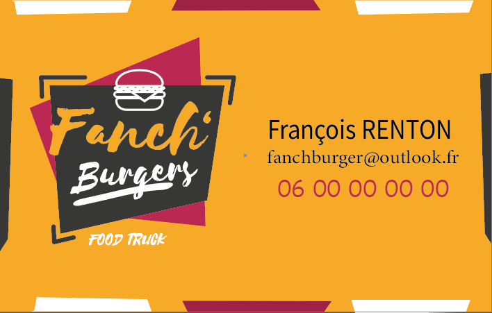
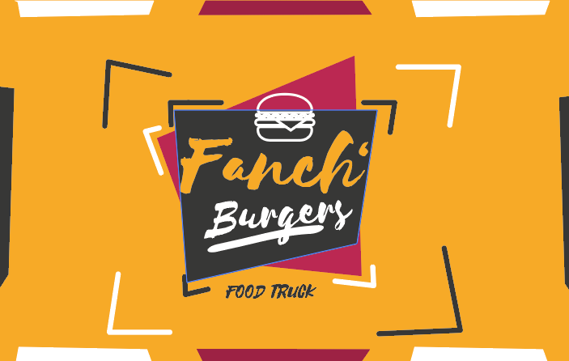
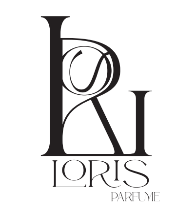
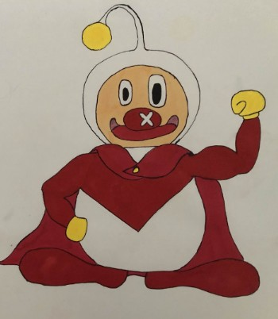
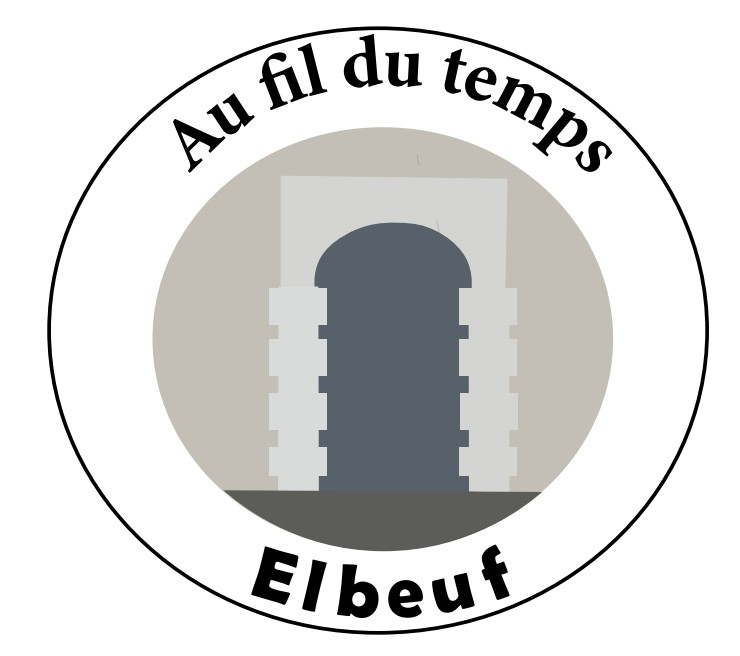
J'aimerais vous présenter Noir Destin, un court-métrage inspiré des films noirs.
Avec mes partenaires sur ce projet, nous avons énormément appris, que ce soit en matière de création du storytelling,
de tournage ou de montage. Ce court-métrage m'a également permis de perfectionner mes compétences en montage vidéo.
Bon visionnage !
Voici Elbeuf: Au fil du temps, une courte annonce d'une exposition immersive (fictive)
au sein du Palais Consulaire d'Elbeuf. Elle commence avec une introduction historique
racontant le passé d'Elbeuf liée à l'industrie du textile poursuivie ensuite par la présentation
du palais avec des jeux d'ombres et des machines utilisées à cette période.
Ce projet m'a permis de perfectionner mes compétences en storytelling, tournage et montage. Bon visionnage !
Il s'agit d'une interview pour sensibiliser les personnes à faire du sport
en expliquant ses bénéfices sur la santé mentale.
Voici une publicité pour
une marque de vinaigre de cidre probiotique
commandité par l'agence de communication Cabyne.
Il s'agit d'une vidéo présentative des poursuites d'études possibles
après le BUT MMI avec l'interview d'un ancien étudiant en BUT MMI : Mathis Piprel.
Réalisation d'un portrait de l'Iut de Rouen site d'Elbeuf
inspiré du style constructiviste en crescendo.
Flowork est une application web qui permet aux entreprises un accompagnement sérieux et doux dans la démarche RSE.
Elle a pour vocation de changer les mauvaises habitudes des employés au sein d'une entreprise pour favoriser des
habitudes plus saines pour la planète.
Comment ? Grâce à la gamification faisant de ces habitudes un véritable jeu !
C'était un travail d'équipe et, pour ma part, j'ai principalement participé à l'étape de conception de l'expérience et de l'interface (UX/UI).
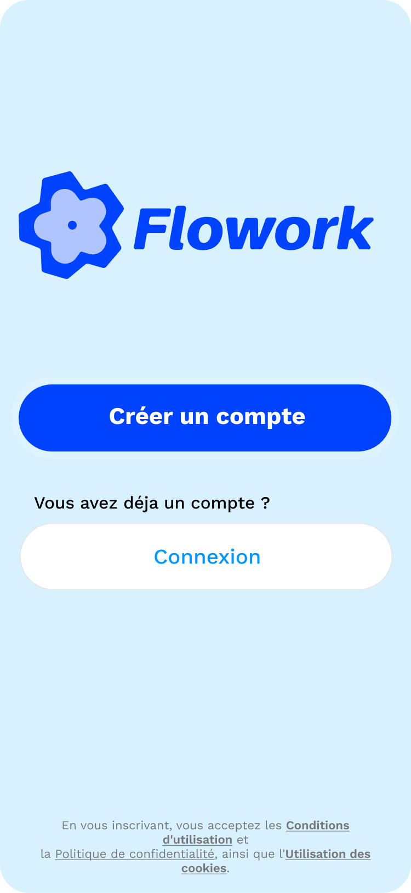
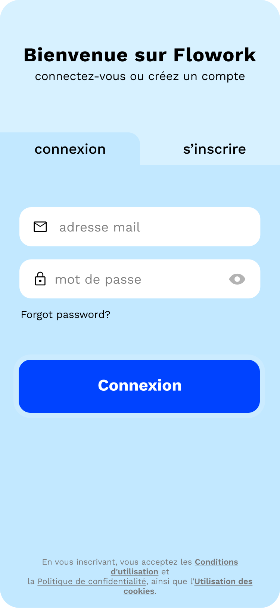
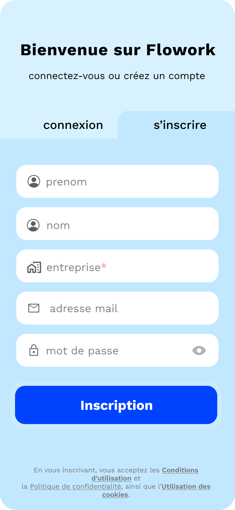
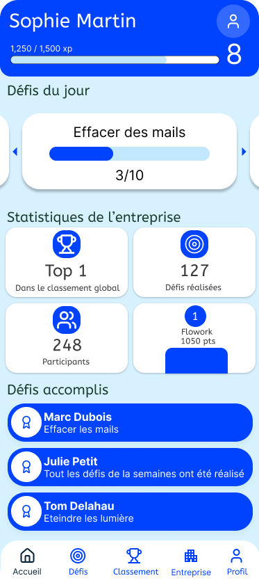
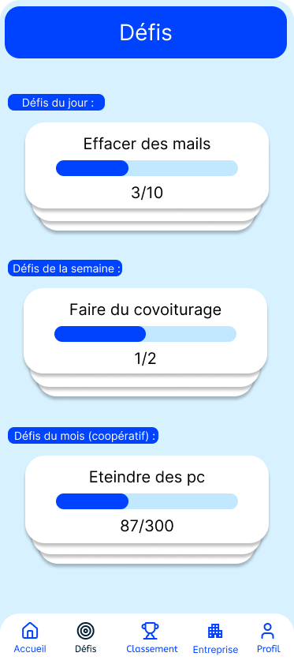
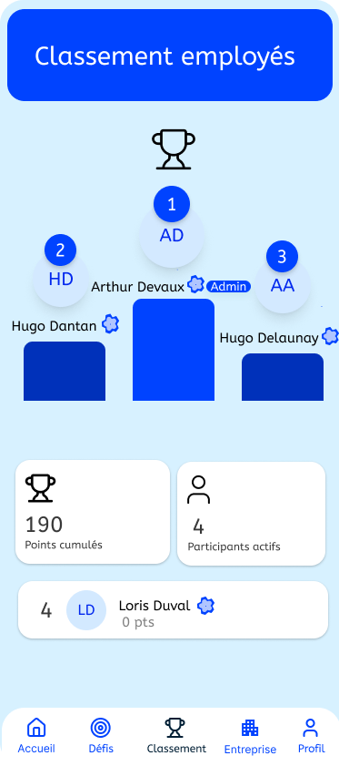
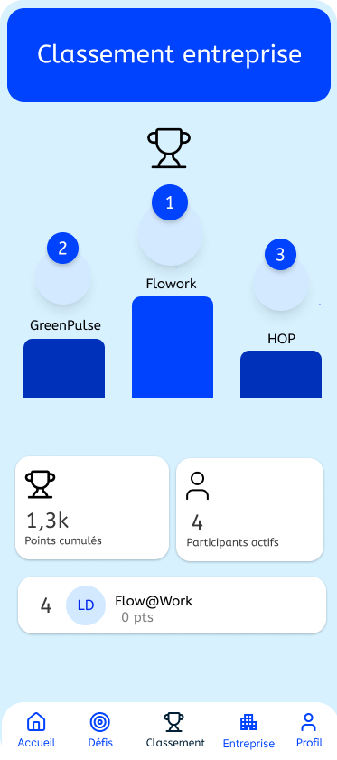
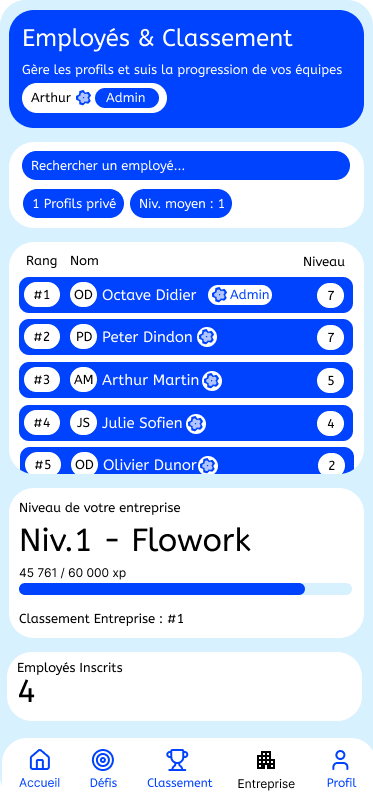
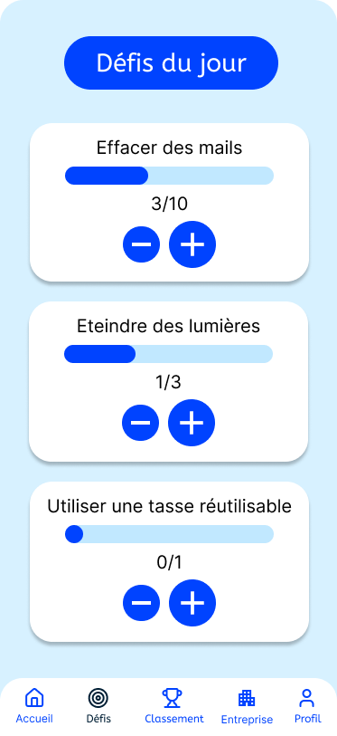
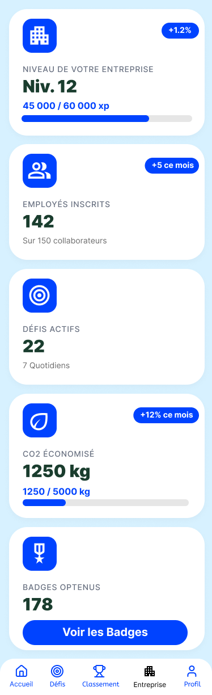
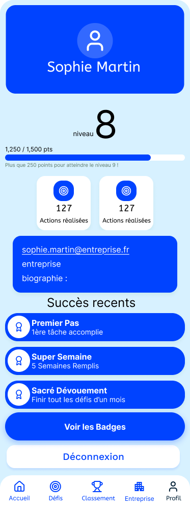